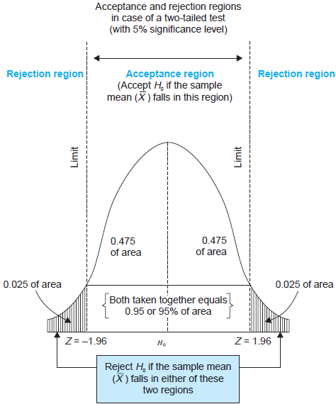

Lecture 7: Hypothesis Test and Confidence Intervals of Linear Regression with a Single Regressor
Table of Contents
- 1. Introduction
- 2. Testing Hypotheses about One of the Regression Coefficients
- 3. Confidence Intervals for a Regression Coefficient
- 4. Regression When \(X\) is a Binary Variable
- 5. Heteroskedasticity and Homoskedasticity
- 6. The Theoretical Foundations of Ordinary Least Squares
- 7. Using the t-Statistic in Regression When the Sample Size is Small
1 Introduction
1.1 Overview
This chapter consists of two parts. The first part concerns hypothesis testing for a single coefficient in a simple linear regression model. The basic concepts and ideas of hypothesis testing in this chapter can be naturally adopted in multiple regression models (Chapters 6 and 7). The second part goes back to some estimation issues, including a binary regressor, homoskedasticity versus heteroskedasticity, as well as the Gauss-Markov theorem, one of the most fundamental theories regarding the OLS estimation. Finally, this chapter ends up with the small sample properties of the t-statistics.
One of the features of this textbook is that it introduces the heteroskedasticity-robust standard error of the OLS estimators, which is considered as a general case and homoskedasticity as a special case. This is contrary to the common layouts of an Econometrics textbook that often first gives the assumption of homoskedasticity, which is a component of the classical OLS assumptions (equivalent to the three least squares assumptions plus the assumption of the homoskedastic and conditionally normally distributed errors), and considers heteroskedasticity as a violation of these assumptions. Also, please be aware that most discussions of the sample distributions in this textbook are in the context of a large sample, while the small sample properties are not the focus.
1.2 Learning goals
- Grasp the basic concepts and techniques of hypothesis testing: the null vs alternative hypotheses, the p-value, the significance level, the critical value, the confidence intervals, the t-statistics.
- Be able to create a binary variable to represent two categories, and know how to correctly interpret the coefficient.
- Understand homoskedasticity and heteroskedasticity and their implications.
- Understand the Gauss-Markov theorem.
1.3 Readings
- Introduction to Econometrics by Stock and Watson. Read thoroughly Chapter 5.
- Introductory Econometrics: a Modern Approach by J. Wooldridge. Read Section 2.5 for the OLS assumptions, and Section 4.2 and 4.3 for hypothesis testing and confidence intervals for a simple regression model.
2 Testing Hypotheses about One of the Regression Coefficients
2.1 A brief review of basic concepts in hypothesis tests
Let's quickly review what we have learned in Lecture 3 concerning hypothesis testing with an example of testing the true value of the population mean from a random sample.
The null versus alternative hypotheses
We want to test two contrasting hypotheses, the null hypothesis versus the alternative hypothesis.
Two-sided tests
\(H_0:\; E(Y) = \mu_{Y,0}\) v.s. \(H_1:\; E(Y) \neq \mu_{Y,0}\)
One-sided test
\(H_0:\; E(Y) = \mu_{Y,0}\) v.s. \(H_1:\; E(Y) > \mu_{Y,0}\)
What follows only concerns the two-sided test.
Test statistics
We need some tool to be used in the test, which is referred to as test statistics.
- When \(\sigma_Y\) is known, we use the z-statistics \[ z = \frac{\overline{Y} - \mu_{Y,0}}{\sigma_{\overline{Y}}} = \frac{\overline{Y} - \mu_{Y,0}}{\sigma_Y/\sqrt{n}} \xrightarrow{\text{ \textit d }} N(0, 1)\]
- When \(\sigma_Y\) is unknown, we use the t-statistics1 \[ t = \frac{\overline{Y} - \mu_{Y,0}}{SE(\overline{Y})} = \frac{\overline{Y} - \mu_{Y,0}}{s_Y/\sqrt{n}} \xrightarrow{ \text{ \textit d } } N(0, 1) \]
The rules for hypothesis testing
We need to set up some rules for judging that under what circumstances, the null hypothesis can be rejected or fail to be rejected.
- Type I and type II errors
- Type I error. The null hypothesis is rejected when in fact it is true.
- Type II error. The null hypothesis is not rejected when in fact it is false.
- The significance level, the critical value, and the p-value
- The significance level. The pre-specified probability of type I error. \(\alpha = 0.05, 0.10, \text{ or } 0.01\)
The critical value. The value of the test statistic for which the test rejects the null hypothesis at the given significance level.
For example. In a two-sided test, with the z statistic. The critical value at the 5\% significance level is \(c_{\alpha}\) such that \(\varPhi(c_{\alpha}) = 0.975\). Accordingly, we know \(c_{\alpha} \approx 1.96\).
The p-value. The p-value is the probability of drawing a statistic at least as adverse to the null hypothesis as the one you actually computed in your sample, assuming the null hypothesis is correct.
Equivalently, the p-value is the smallest significance level at which the null hypothesis could be rejected, based on the test statistic actually observed.
Mathematically, the p-value is \[ \pr_{H_0}\left( \left| \overline{Y} - \mu_{Y,0} \right| > \left| \overline{Y}^{act} - \mu_{Y,0} \right| \right) = 2\varPhi(-|t^{act}|) \text{ .} \]
- Rejection rules
The following two statements are equivalent in terms of rejecting the null hypothesis at the 5% significance level.
- We can reject the null if the test statistics falls into the rejection region set by the critical values at the 5% significance level, that is, when \(|t^{act}| > c_{\alpha} = 1.96\),
- We can reject the null if the p-value is less than the significance level that is 5% in this case.
The rejection rule can be illustrated using Figure 1.

Figure 1: An illustration of a two-sided test
2.2 Two-sided hypotheses concerning \(\beta_1\)
Application to test scores
In the last lecture, we estimate a simple linear regression model for test scores and class sizes, which yields the following estimated sample regression function,
\begin{equation} \label{eq:testscr-str-1e} \widehat{TestScore} = 698.93 - 2.28 \times STR \end{equation}Now the question faced by the superintendent of the California elementary school districts is whether the estimated coefficient on STR is valid. In the terminology of statistics, his question is whether \(\beta_1\) is statistically significantly different from zero.
Testing hypotheses about the slope \(\beta_1\)
\textcolor{red}{Note: all discussions about hypothesis testing that follows involve only the regression with a large sample size. The last section of this lecture touches upon the small sample properties of the test statistics.}
- The two-sided hypothesis
\[ H_0: \beta_1 = \beta_{1,0} \text{ vs. } H_1: \beta_1 \neq \beta_{1,0} \]
- The t-statistic
- The general form of the t-statistic
In general, the t-statisitc has the form
\begin{equation} \label{eq:general-t} t = \frac{\text{estimator} - \text{hypothesized value}}{\text{standard error of the estimator}} \end{equation} - The t-statistics for testing \(\beta_1\)\begin{equation} \label{eq:t-stat-b1} t = \frac{\hat{\beta}_1 - \beta_{1,0}}{SE(\hat{\beta}_1)} \end{equation}
- The general form of the t-statistic
- The standard error of \(\hat{\beta}_1\) is calculated as\begin{equation} \label{eq:se-b-1} SE(\hat{\beta}_1) = \sqrt{\hat{\sigma}^2_{\hat{\beta}_1}} \end{equation}
where
\begin{equation} \label{eq:sigma-b-1} \hat{\sigma}^2_{\hat{\beta}_1} = \frac{1}{n} \frac{\frac{1}{n-2} \sum_{i=1}^n (X_i - \bar{X})^2 \hat{u}^2_i}{\left[ \frac{1}{n} \sum_{i=1}^n (X_i - \bar{X})^2 \right]^2} \end{equation} - How to understand Equation \ref{eq:sigma-b-1}
- The population variance of \(\beta_1\) is \[ \sigma^2_{\hat{\beta}_1} = \frac{1}{n} \frac{\var\left( (X_i - \mu_X)u_i \right)}{\left( \var(X_i) \right)^2} \]
- The denominator in Equation (\ref{eq:sigma-b-1}) is a consistent estimator of \(\var(X_i)^2\).
- The numerator in Equation (\ref{eq:sigma-b-1}) is a consistent estimator of \(\var((X_i - \mu_X)u_i)\), adjusted by \(n-2\) degrees of freedom.
- The standard error computed from Equation (\ref{eq:sigma-b-1}) is the heteroskedasticity-robust standard error, which will be explained in detail shortly in this lecture.
- Compute the p-value
Let's reiterate the two equivalent definitions of the p-value:
- The p-value is the probability of observing a value of \(\hat{\beta}_1\) at least as different from \(\beta_{1,0}\) as the estimate actually computed (\(\hat{\beta}^{act}_1\)), assuming that the null hypothesis is correct.
- The p-value is the smallest significance level at which the null hypothesis could be rejected, based on the test statistic actually observed.
According to the first definition, the p-value for testing \(\beta_1\) can be expressed with a probability function under the null hypothesis as
\begin{equation*} \begin{split} p\text{-value} &= \pr_{H_0} \left( | \hat{\beta}_1 - \beta_{1,0} | > | \hat{\beta}^{act}_1 - \beta_{1,0} | \right) \\ &= \pr_{H_0} \left( \left| \frac{\hat{\beta}_1 - \beta_{1,0}}{SE(\hat{\beta}_1)} \right| > \left| \frac{\hat{\beta}^{act}_1 - \beta_{1,0}}{SE(\hat{\beta}_1)} \right| \right) \\ &= \pr_{H_0} \left( |t| > |t^{act}| \right) \end{split} \end{equation*}In large samples, the \(p\text{-value} = \pr\left(|t| > |t^{act}| \right) = 2 \varPhi(-|t^{act}|)\).
The null hypothesis is rejected at the 5% significance level if the \(p\text{-value} < 0.05\) or \(|t^{act}| > 1.96\), which is the critical value at the 5% significant level.
- Application to test scores
The OLS estimation of the linear regression model of test scores against student-teacher ratios, together with the standard errors of all parameters in the model, can be represented using the following equation,
\begin{equation*} \widehat{TestScore} = \underset{\displaystyle (10.4)}{698.9} - \underset{\displaystyle (0.52)}{2.28} \times STR,\; R^2 = 0.051,\; SER = 1.86 \end{equation*}The heteroskedasticity-robust standard errors are reported in the parentheses, that is, \(SE(\hat{\beta}_0) = 10.4\) and \(SE(\hat{\beta}_1) = 0.52\).
The superintendent's question is whether \(\beta_1\) is significant for which we can test the null hypothesis against the alternative one as \[ H_0: \beta_1 = 0, H_1: \beta_1 \neq 0 \]
The t-statistics is \[ t = \frac{\hat{\beta}_1}{SE(\hat{\beta}_1)} = \frac{-2.28}{0.52} = -4.38 < -1.96 \]
The p-value associated with \(t^{act} = -4.38\) is approximately 0.00001, which is far less than 0.05.
Based on the t-statistics and the p-value, we can say the null hypothesis is rejected at the 5% significance level. In English, it means that the student-teacher ratios do have a significant effect on test scores.

Figure 2: Calculating the p-value of a two-sided test when \(t^{act}=-4.38\)
2.3 The one-sided alternative hypothesis
The one-sided hypotheses
In some cases, it is appropriate to use a one-sided hypothesis test. For example, the superintendent of the California school districts want to know whether class sizes have a negative effect on test scores, that is, \(\beta_1 < 0\).
For a one-sided test, the null hypothesis and the one-sided alternative hypothesis are2
\[ H_0: \beta_1 = \beta_{1,0} \text{ vs. } H_1: \beta_1 < \beta_{1,0} \]
The one-sided left-tail test
- The t-statistic is the same as in a two-sided test \[ t = \frac{\hat{\beta}_1 - \beta_{1,0}}{SE(\hat{\beta}_1)} \]
- Since we test \(\beta_1 < \beta_{1,0}\), if this is true, the t-statistics should be statistically significantly less than zero.
- The p-value is computed as \(\pr(t < t^{act}) = \varPhi(t^{act})\).
- The null hypothesis is rejected at the 5% significance level when \(\text{p-value} < 0.05\) or \(t^{act} < -1.645\).
- In the application of test scores, the t-statistics is -4.38, which is less than -1.645 and -2.33 (the critical value for a one-sided test with a 1% significance level). Thus, the null hypothesis is rejected at the 1% level.
3 Confidence Intervals for a Regression Coefficient
3.1 Two equivalent definitions of confidence intervals
A 95% confidence interval for \(\beta_1\) has two equivalent definitions.
- It is the set of values that cannot be rejected using a two-sided hypothesis test with a 5% significance level.
- It is an interval that has a 95% probability of containing the true value of \(\beta_1\); that is, in 95% of possible samples that might be drawn, the confidence interval will contain the true value of \(\beta_1\).
Let's go back to Figure 1. According to the first definition, the acceptance region contains the values of the test statistics that fail to reject the null hypothesis, which corresponds to the values of \(\beta_1\) that cannot be rejected.
3.2 Construct the 95% confidence interval for \(\beta_1\)
The 95% confidence interval for \(\beta_1\) can be constructed using the t-statistic, assuming that with large samples, the t-statistic is approximately normally distributed. The 95% critical value of a standard normal distribution is 1.96. Therefore, we can obtain the 95% confidence interval for \(\beta_1\) by the following steps
The 95% confidence interval for \(\beta_1\) is \[ \left[ \hat{\beta}_1 - 1.96 SE(\hat{\beta}_1),\; \hat{\beta}_1 + 1.96 SE(\hat{\beta}_1) \right] \]
3.3 The application to test scores
In the application to test scores, given that \(\hat{\beta}_1 = -2.28\) and \(SE(\hat{\beta}_1) = 0.52\), the 95% confidence interval for \(\beta_1\) is \({-2.28 \pm 1.96 \times 0.52}\), or \(-3.30 \leq \beta_1 \leq -1.26\). Notice that the confidence interval only spans over the negative region without going beyond zero, which implies that the null hypothesis of \(\beta_1 = 0\) can be rejected at the 5% significance level.
3.4 Confidence intervals for predicted effects of changing \(X\)
\(\beta_1\) is the marginal effect of \(X\) on \(Y\), that is, \[ \beta_1 = \frac{\dx Y}{ \dx X} \Rightarrow \dx Y = \beta_1 \dx X \] When \(X\) changes by \(\Delta X\), \(Y\) changes by \(\beta_1 \Delta X\).
So the 95% confidence interval for \(\beta_1 \Delta X\) is \[ \left[ \hat{\beta}_1 \Delta X - 1.96 SE(\hat{\beta}_1) \Delta X,\; \hat{\beta}_1 \Delta X + 1.96SE(\hat{\beta}_1) \Delta X \right] \]
4 Regression When \(X\) is a Binary Variable
4.1 A binary variable
A binary variable takes on values of one if some condition is true or zero otherwise, which is also called a dummy variable, a categorical variable, or an indicator variable.
For example,
\begin{equation*} D_i = \begin{cases} 1,\; &\text{if the i\textsuperscript{th} subject is female} \\ 0,\; &\text{if the i\textsuperscript{th} subject is male} \end{cases} \end{equation*}The linear regression model with a dummy variable as the regressor is
\begin{equation} \label{eq:dummy-1} Y_i = \beta_0 + \beta_1 D_i + u_i,\; i = 1, \ldots, n \end{equation}The coefficient on \(\beta_1\) is estimated by the OLS estimation method in the same way as a continuous regressor. The difference lies in how we interpret \(\beta_1\).
4.2 Interpretation of the regression coefficients
Given that the assumption \(E(u_i | D_i) = 0\) holds in Equation (\ref{eq:dummy-1}), we have two population regression functions for the two cases, that is,
- When \(D_i = 1\), \(E(Y_i|D_i = 1) = \beta_0 + \beta_1\)
- When \(D_i = 0\), \(E(Y_i|D_i = 0) = \beta_0\)
Therefore, \(\beta_1 = E(Y_i | D_i = 1) - E(Y_i |D_i = 0)\), the difference in the population means between two groups represented by \(D_i = 1\) and \(D_i = 0\), respectively.
4.3 Hypothesis tests and confidence intervals
The hypothesis tests and confidence intervals for the coefficient on a binary variable follows the same procedure of those for a continuous variable \(X\).
Usually, the null and alternative hypotheses concerning a dummy variable are \[ H_0:\, \beta_1 = 0 \text{ vs. } H_1:\, \beta_1 \neq 0 \] Therefore, the t-statistic is \[ t = \frac{\hat{\beta}_1}{SE(\hat{\beta}_1)} \] And the 95% confidence interval is \[ \hat{\beta}_1 \pm 1.96 SE(\hat{\beta}_1) \]
5 Heteroskedasticity and Homoskedasticity
5.1 What are heteroskedasticity and homoskedasticity?
Homoskedasticity
The error term \(u_i\) is homoskedastic if the conditional variance of \(u_i\) given \(X_i\) is constant for \(i = 1, \ldots, n\). Mathematically, it says \(\var(u_i | X_i) = \sigma^2,\, \text{ for } i = 1, \ldots, n\), i.e., the variance of \(u_i\) for all $i$'s is a constant and does not depend on \(X_i\).
Heteroskedasticity
In contrast, the error term \(u_i\) is heteroskedastic if the conditional variance of \(u_i\) given \(X_i\) changes on \(X_i\) for \(i = 1, \ldots, n\). That is, \(\var(u_i | X_i) = \sigma^2_i,\, \text{ for } i = 1, \ldots, n\).
e.g.. A multiplicative form of heteroskedasticity is \(\var(u_i|X_i) = \sigma^2 f(X_i)\) where \(f(X_i)\) is a function of \(X_i\), for example, \(f(X_i) = X_i\) as a simplest case.
See Figure \ref{fig:homovshetero} for a visual comparison between homoskedasticity and heteroskedasticity.
5.2 Mathematical implications of homoskedasticity
Unbiasedness, consistency, and the asymptotic distribution
As long as the least squares assumptions holds, whether the error term, \(u_i\), is homoskedastic or heteroskedastic does not affect unbiasedness, consistency, and the asymptotic normal distribution of the OLS estimators.
- The unbiasedness requires that \(E(u_i|X_i) = 0\)
- The consistency requires that \(E(X_i u_i) = 0\), which is true if \(E(u_i|X_i)=0\).
- The asymptotic normal distribution requires additionally that \(\var((X_i-\mu_X)u_i) < \infty\), which still holds as long as Assumption 3 holds, that is, no extreme outliers of \(X_i\).
Efficiency
- What means "being efficient"
The existence of heteroskedasticity affects the efficiency of the OLS estimator
- Suppose \(\hat{\beta}_1\) and \(\tilde{\beta}_1\) are both unbiased estimators of \(\beta_1\). Then, \(\hat{\beta}_1\) is said to be more efficient than \(\tilde{\beta}_1\) if \(\var(\hat{\beta}_1) < \var(\tilde{\beta}_1)\).
- When the errors are homoskedastic, the OLS estimators \(\hat{\beta}_0\) and \(\hat{\beta}_1\) are efficient among all estimators that are linear in \(Y_1, \ldots, Y_n\) and are unbiased, conditional on \(X_1, \ldots, X_n\).
- See the Gauss-Markov Theorem below.
5.3 The homoskedasticity-only variance formula
Recall that we can write \(\hat{\beta}_1\) as
Therefore, if $u_i$'s are homoskedastic and \(\sigma^2\) is known, then
When \(\sigma^2\) is unknown, then we use \(s^2_u = 1/(n-2) \sum_i \hat{u}_i^2\) as an estimator of \(\sigma^2\). Thus, the homoskedasticity-only estimator of the variance of \(\hat{\beta}_1\) is
And the homoskedasticity-only standard error is \(SE(\hat{\beta}_1) = \sqrt{\tilde{\sigma}^2_{\hat{\beta}_1}}\).
Recall that the heteroskedasticity-robust standard error is
where
which is also referred to as Eicker-Huber-White standard errors.
5.4 What does this mean in practice?
- Heteroskedasticity is common in cross-sectional data. If you do not have strong beliefs in homoskedasticity, then it is always safer to report the heteroskedasticity-robust standard errors and use these to compute the robust t-statistic.
- In most software, the default setting is to report the
homoskedasticity-only standard errors. Therefore, you need to
manually add the option for the robust estimation.
In R, you can use the following codes
library(AER) model1 <- lm(testscr ~ str, data = classdata) coeftest(model1, vcov = vcovHC(model1, type="HC1"))
In STATA, you can use
regress testscr str, robust
6 The Theoretical Foundations of Ordinary Least Squares
6.1 The Gauss-Markov conditions
We have already known the least squares assumptions: for \(i = 1, \ldots, n\), (1) \(E(u_i|X_i) = 0\), (2) \((X_i, Y_i)\) are i.i.d., and (3) large outliers are unlikely.
The Gauss-Markov conditions provide anther version of these assumptions plus the assumption of homoskedastic errors.
The Gauss-Markov conditions
For \(\mathbf{X} = [X_1, \ldots, X_n]\) 3
- \(E(u_i| \mathbf{X}) = 0\)
- \(\var(u_i | \mathbf{X}) = \sigma^2_u,\, 0 < \sigma^2_u < \infty\)
- \(E(u_i u_j | \mathbf{X}) = 0,\, i \neq j\)
From the three Least Squares Assumptions and the homoskedasticity assumption to the Gauss-Markov conditions
Note that the conditional expectations in the G-M conditions are in terms of all observations \(\mathbf{X}\), not just one observation, \(X_i\). However, all the G-M conditions can be derived from the least squares assumptions plus the homoskedasticity assumption. Specifically,
- Assumptions (1) and (2) imply \(E(u_i | \mathbf{X}) = E(u_i | X_i) = 0\).
- Assumptions (1) and (2) imply \(\var(u_i| \mathbf{X}) = \var(u_i | X_i)\). With the homoskedasticity assumption, \(\var(u_i | X_i) = \sigma^2_u\), Assumption (3) then implies \(0 < \sigma^2_u < \infty\).
- Assumptions (1) and (2) imply that \(E(u_i u_j | \mathbf{X}) = E(u_i u_j | X_i, X_j) = E(u_i|X_i) E(u_j|X_j) = 0\).
6.2 Linear conditionally unbiased estimator
The general form of a linear conditionally unbiased estimator of \(\beta_1\)
The class of linear conditionally unbiased estimators consists of all estimators of \(\beta_1\) that are linear function of \(Y_i, \ldots, Y_n\) and that are unbiased, conditioned on \(X_1, \ldots, X_n\).
For any linear estimator \(\tilde{\beta}_1\), it can be written as
\begin{equation} \label{eq:beta1-tilde} \tilde{\beta}_1 = \sum_{i=1}^n a_i Y_i\ \end{equation}where the weights \(a_i\) for \(i = 1, \ldots, n\) depend on \(X_1, \ldots, X_n\) but not on \(Y_1, \ldots, Y_n\).
\(\tilde{\beta}_1\) is conditionally unbiased means that
\begin{equation} \label{eq:e-beta1-tilde} E(\tilde{\beta}_1 | \mathbf{X}) = \beta_1\ \end{equation}By the Gauss-Markov conditions, from Equation (\ref{eq:beta1-tilde}), we can have
\begin{equation*} \begin{split} E(\tilde{\beta}_1 | \mathbf{X}) &= \sum_i a_i E(\beta_0 + \beta_1 X_i + u_i | \mathbf{X}) \\ &= \beta_0 \sum_i a_i + \beta_1 \sum_i a_i X_i \end{split} \end{equation*}For Equation (\ref{eq:e-beta1-tilde}) being satisfied with any \(\beta_0\) and \(\beta_1\), we must have \[ \sum_i a_i = 0 \text{ and } \sum_i a_iX_i = 1 \]
The OLS esimator \(\hat{\beta}_1\) is a linear conditionally unbiased estimator
We have known that \(\hat{\beta}_1\) is unbiased both conditionally and unconditionally. Next, we show that it is linear. \[ \hat{\beta}_1 = \frac{\sum_i (X_i - \bar{X})(Y_i - \bar{Y})}{\sum_i (X_i - \bar{X})^2} = \frac{\sum_i (X_i - \bar{X})Y_i}{\sum_i (X_i - \bar{X})^2} = \sum_i \hat{a}_i Y_i \] where the weights are \[ \hat{a}_i = \frac{X_i - \bar{X}}{\sum_i (X_i - \bar{X})^2}, \text{ for } i = 1, \ldots, n \] Since \(\hat{\beta}_1\) is a linear conditionally unbiased estimator, we must have \[ \sum_i \hat{a}_i = 0 \text{ and } \sum_i \hat{a}_i X_i = 1 \] which can be simply verified.
6.3 The Gauss-Markov Theorem
The Gauss-Markov Theorem for \(\hat{\beta}_1\) states
If the Gauss-Markov conditions hold, then the OLS estimator \(\hat{\beta}_1\) is the *B*est (most efficient) *L*inear conditionally *U*nbiased *E*stimator (BLUE).
The theorem can also be applied to \(\hat{\beta}_0\).
The proof of the Gauss-Markov theorem is in Appendix 5.2. A key in this proof is that we can rewrite the expression of any linear conditionally unbiased estimator \(\tilde{\beta}_1\) as \[ \tilde{\beta}_1 = \sum_i a_i Y_i = \sum_i (\hat{a}_i + d_i)Y_i = \hat{\beta}_1 + \sum_i d_i Y_i \] And the goal of the proof is to show that \[ \var(\hat{\beta}_1 | \mathbf{X}) \leq \var(\tilde{\beta}_1 | \mathbf{X}) \] The equality holds only when \(\tilde{\beta}_1 = \hat{\beta}_1\).
6.4 The limitations of the Gauss-Markov theorem
The Gauss-Markov conditions may hold in practice. Any violation of the Gauss-Markov conditions will result in the OLS estimator not being BLUE. The table below summarizes the cases in which a kind of violation occurs, the consequences of such violation to the OLS estimators, and possible remedies.
Table 1: Summary of Violations of the Gauss-Markov Theorem Violation Cases Consequences Remedies \(E(u \mid X) \neq 0\) omitted variables, endogeneity biased more $X$'s, IV method \(\var(u_i\mid X)\) not constant heteroskedasticity inefficient WLS, GLS, HCCME \(E(u_{i}u_{j}\mid X) \neq 0\) autocorrelation inefficient GLS, HAC - There are other candidate estimators that are not linear and conditionally unbiased; under some conditions, these estimators are more efficient than the OLS estimators.
7 Using the t-Statistic in Regression When the Sample Size is Small
7.1 The classical assumptions of the least squares estimation
We first expand the OLS assumptions by two additional ones. One is the assumption of the homoskedastic errors, and another one is the assumption that the conditional distribution of \(u_i\) given \(X_i\) is the normal distribution, i.e., \(u_i \sim N(0, \sigma^2_u) \text{ for } i = 1, \ldots, n\).
All these assumptions together are often referred to as the classical assumptions of the least squares estimation. For \(i = 1, 2, \ldots, n\)
- Assumption 1: \(E(u_i | X_i) = 0\) (exogeneity of \(X\))
- Assumption 2: \((X_i, Y_i)\) are i.i.d. (IID of \(X, Y, \text{ and } u\))
- Assumption 3: \(0 < E(X_i^4) < \infty\) and \(0 < E(Y_i^4) < \infty\) (No large outliers)
- Extended Assumption 4: \(\var(u_i | X_i) = \sigma^2_u, \text{ and } 0 < \sigma^2_u < \infty\) (homoskedasticity)
- Extended Assumption 5: \(u_i | X_i \sim N(0, \sigma^2_u)\) (normality)
7.2 The t-Statistic and the Student-t Distribution
Under all the classical assumptions, we can construct the t-statistic for hypothesis testing of a single coefficient. Even with a small samples, the t-statistic has an exact Student-t distribution.
The t-statistic is for \(\beta_1\)
\[H_0: \beta_1 = \beta_{1,0} \text{ vs } H_1: \beta_1 \neq \beta_{1,0}\]
\begin{equation} t = \frac{\hat{\beta}_1 - \beta_{1,0}}{\hat{\sigma}_{\hat{\beta}_1}} \end{equation}where
\begin{equation*} \hat{\sigma}^2_{\hat{\beta}_1} = \frac{s^2_u}{\sum_i (X_i - \bar{X})^2} \text{ and } s^2_u = \frac{1}{n-2}\sum_i \hat{u}_i^2 \end{equation*}the former of which is the homoskedasticity-only standard error of \(\hat{\beta}_1\) and the latter is the standard error of the regression.
The Student-t distribution of \(t\)
The t statistic can be rewritten as
\begin{equation} \label{eq:t-stat-b1a} t = \frac{(\hat{\beta}_1 - \beta_{1,0})/\sigma_{\hat{\beta}_1}}{\sqrt{\frac{\hat{\sigma}^2_{\hat{\beta}_1}}{\sigma^2_{\hat{\beta}_1}}}} = \frac{z_{\hat{\beta}_1}}{\sqrt{\frac{s^2_u}{\sigma^2_u}}} = \frac{z_{\hat{\beta}_1}}{\sqrt{\frac{W}{n-2}}} \end{equation}where
\[\sigma^2_{\hat{\beta}_1} = \frac{\sigma^2_u}{\sum_i (X_i - \bar{X})^2} \]
is the homoskedasticity-only variance of \(\hat{\beta}_1\) when the variance of errors \(\sigma^2_u\) is known.
\[ z_{\hat{\beta}_1} =\frac{\hat{\beta}_1 - \beta_{1,0}}{\sigma_{\hat{\beta}_1}} \]
is the z-statistic which has a standard normal distribution, that is, \(z_{\hat{\beta}_1} \sim N(0, 1)\)
\[ W = (n-2)\frac{s^2_u}{\sigma^2_u} = \frac{\sum_i\hat{u}_i^2}{\sigma^2_u} = \sum_i \left(\frac{\hat{u}_i}{\sigma_u}\right)^2 \]
It can be shown that W is the sum of squares of \((n-2)\) independent standard normally distributed variables, which results in a chi-squared distribution with \((n-2)\) degrees of freedom. That is, \(W \sim \chi^2(n-2)\), which is also independent of \(z_{\hat{\beta}_1}\). Therefore, the t-statistic in Equation (\ref{eq:t-stat-b1a}), as the ratio of \(z_{\hat{\beta}_1}\) and \(\sqrt{W/(n-2)}\), is distributed as \(t(n-2)\).